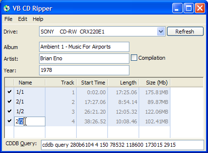
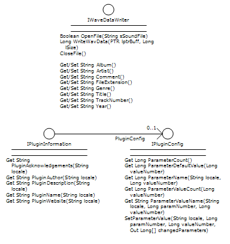

VB5 CD Ripper Plugin Interface (9K)
VB5 CD Ripper Plugin Interface (9K)
 VB5 Pluggable CD Ripper (191K)
VB5 Pluggable CD Ripper (191K)
 VB6 CD Ripper Plugin Interface (9K)
VB6 CD Ripper Plugin Interface (9K)
 VB6 Pluggable CD Ripper (189K)
VB6 Pluggable CD Ripper (189K)
 11 Jun 2004
11 Jun 2004
First Posted
 vbAccelerator Visual Studio Style Tab Control
vbAccelerator Visual Studio Style Tab Control

CD Ripping in VB Part 2
Creating reusable components for writing MP3 and WAV files from audio data
This sample provides a more sophisticated CD Ripper which is capable of writing MP3 files by adding the following:
- A plugin-based architecture for writing audio files.
- Implementing a WAV to MP3 encoder.
The audio plugins can be re-used wherever you want to be able to create audio files.
Before you Begin
This sample uses the CD Ripping 1 sample as a basis, and also uses the LAME encoder. CDRip is released under the GPL licence, and the LAME encoder under the LGPL. Please read the article notes as well for details of usage of these files.
To run the sample, you will need to have the following three Win32 DLLs somewhere that your VB application will find it (generally it is easiest to put them in the Windows\System directory):
- lame_enc.dll and LameEncShim.dll (Download: LAME encoder DLLs).
- CDRip.dll (Download: CD Rip DLLs).
Once that's in place, then note the sample also uses SGrid 2 and the Visual Studio Style Tab control.
Creating a Plugin Architecture For Audio Writing
The first step in creating an application which supports a plugin architecture is to decide how the plugins will interface with the application itself. There are really two ways of approaching this: you can either create a very loosely-typed interface, which allows for great flexiblity but tends to require the implementations to do more work, or you can build a closely-specified interface, which makes coding a lot easier but restricts options in terms of what the plugins can achieve.
In this case I've chosen the latter approach as the task of encoding a file is fairly well constrained. In addition, if the interface is well-defined then it can be deployed as an ActiveX DLL (essentially a Type Library; if you are an ODL fan you can write it directly as a TLB and skip the 10Kb overhead of the DLL) and this means both plugin implementors and consumers can both take advantage of early-binding when writing code, which makes the Intelli-sense coding life rather nice!
Before We Begin
If you are going to create an application which uses an interface specified in a Type Library, life is easier if you define the interface up-front and build it before doing anything else. Although you can develop in a project group with the interface DLL and modify it as you go on, you'll soon find yourself in binary compatiblity hell and you'll find that it's easier to crash VB that you think just trying to compile the thing.
So the recommendation is to define your interface first, build the DLL with binary compatibility on and then don't touch it again unless you really have to.
Defining the Interface
To encode a file, you should be able to perform the following tasks:
- Open a file for writing.
- Write chunks of data to the file.
- Set file tags like the artist and track where possible.
- Close a completed file.
In addition to these standard tasks, applications typically also need to be able to find out information about the plugin like it's name, and any copyright information, for display purposes, and some plugins have configuration options which the user should be able to set.
Based on these requirements, I decided that plugins would support these interfaces:
- IWaveDataWriter
This interface provides all of the methods needed to encode an audio file (on reflection, I think it should probably have actually been called IAudioDataWriter, since the current name might imply it writes wave data, rather than writing audio files from wave data, but it's too late now :). - IPluginInformation
This interface provides the name, author, copyright and other related meta-data about the plugin. It also provides access to the IPluginConfiguration interface (if supported by the plugin). - IPluginConfiguration
This interface provides details of the parameters, their possible values and a way to set parameters for the plugin.
The final interface looks like this:
Plugin Audio Writer Interfaces.
Implementing Audio Plugins
With an interface in place, we can now start creating output audio plugins. The download includes two plugins, although it should be straightforward to add an APE plugin using the code in the Lossless Audio Compression sample:
- Wave File Writer (vbalWaveDataWriter)
- MP3 File Writer (vbalMp3DataWriter)
I'll cover the implementation of each.
1. Wave Data Plugin
The Wave Data Plugin is the simpler of the two. There are no configuration settings and the WAV format does not support track tags (well, actually I suppose it could if you added another chunk to the wave file, but if you do that you'll probably find many wave players won't read it, as they assume that the Wave file has the standard chunks).
The Implementation is basically the code from the CD Ripping in VB Part 1 wrapped into the interfaces. The main (and only) class in the plugin is cWavDataWriter and implements both IWaveDataWriter and the IPluginInformation interfaces:
Implements IWaveDataWriter Implements IPluginInformation
Implementing the IPluginInformation interface is fairly trivial, although I haven't localised any of the strings in this example:
Private Property Get IPluginInformation_Configuration() _
As vbalCDRipInterfaces.IPluginConfig
' Not supported
Set IPluginInformation_Configuration = Nothing
End Property
Private Property Get IPluginInformation_PluginAcknowledgements( _
ByVal locale As String) As String
' none
End Property
Private Property Get IPluginInformation_PluginAuthor( _
ByVal locale As String) As String
IPluginInformation_PluginAuthor = _
"Steve McMahon (steve@vbaccelerator.com)"
End Property
Private Property Get IPluginInformation_PluginDescription( _
ByVal locale As String) As String
IPluginInformation_PluginDescription = _
"Writes stereo 16 bit 44.1kHz Wavefiles."
End Property
Private Property Get IPluginInformation_PluginName( _
ByVal locale As String) As String
IPluginInformation_PluginName = _
"Wave File Output Plugin"
End Property
Private Property Get IPluginInformation_PluginWebsite( _
ByVal locale As String) As String
IPluginInformation_PluginWebsite = _
"http://vbaccelerator.com/"
End Property
Implementing the IWavDataWriter interface is where the fun happens. Firstly, I provide a null implementation of all the methods to set the tags:
Private Property Let IWaveDataWriter_Album(ByVal RHS As String) ' ignored End Property ' etc
Next, opening the file. Most of the work in opening a Wave file is performed in the WriteWaveFormatHeader method; refer to the full source code for details of how this is done:
Private Function IWaveDataWriter_OpenFile( _
ByVal sSoundFile As String) As Boolean
' close previously open file (if any)
IWaveDataWriter_CloseFile
m_hMmio = mmioOpen( _
sSoundFile, ByVal 0&, _
MMIO_ALLOCBUF Or MMIO_READWRITE Or MMIO_CREATE)
If (m_hMmio = 0) Then
errHandler 3, "OpenFile"
Exit Function
End If
If (WriteWaveFormatHeader()) Then
IWaveDataWriter_OpenFile = True
End If
End Function
With the file open, writing wave data is easy:
Public Function IWaveDataWriter_WriteWavData( _
ByVal lPtrBuff As Long, ByVal lWriteSize As Long _
) As Long
Dim lSize As Long
If (m_hMmio = 0) Then
errHandler 5, "WriteWavData"
Else
' Write to the data chunk:
lSize = mmioWrite(m_hMmio, ByVal lPtrBuff, lWriteSize)
' Check we wrote the right number of bytes:
If Not (lSize = lWriteSize) Then
errHandler 6, "WriteWavData"
End If
IWaveDataWriter_WriteWavData = lSize
End If
End Function
Finally, the CloseFile implementation ascends out of the chunks to write the chunk sizes and closes the file handle:
Public Sub IWaveDataWriter_CloseFile()
Dim lErr As Long
If Not (m_hMmio = 0) Then
' Ascend the output file out of the 'data' chunk:
If Not (mmioAscend(m_hMmio, m_mmckInfoChild, 0) = 0) Then
lErr = 1
End If
' Ascend the output file out of the 'RIFF' chunk, this writes out
' the size of the data
If Not (mmioAscend(m_hMmio, m_mmckInfoParent, 0) = 0) Then
lErr = 2
End If
mmioClose m_hMmio, 0
m_hMmio = 0
errHandler lErr, "CloseFile"
End If
End Sub
2. MP3 Plugin
The MP3 plugin is more sophisticated but follows along the same lines. MP3 encoding is performed using the code provided in the MP3 Encoding with LAME sample, with ID3v1 and ID3v2 tagging of the resulting file provided using the Reading and Writing MP3 ID3v1 and ID3v2 Tags code.
Integration with the plugin interfaces was generally straightforward, the only problem being that the LAME MP3 encoder defines the chunk size it can encode in one call. This chunk size is different from the data chunk size provided by the CD ripper, and is typically not an even multiple. The data writer solves this problem by attempting to encode as many full chunks as it can and storing any extra in an overflow buffer. Next time a write operation is performed, data is appended to the overflow and that is encoded before repeating the operation. Finally, when there is no more data, any data left in the overflow buffer is encoded and written to the file.
The code for managing the overflow is shown here:
Private m_ptrOverflow As Long
Private m_hMemOverflow As Long
Private m_lOverflowSize As Long
Private m_lOverflowUsed As Long
' During open:
m_lOverflowSize = m_cLame.BufferSize
m_hMemOverflow = LocalAlloc(GPTR, m_lOverflowSize)
m_ptrOverflow = LocalLock(m_hMemOverflow)
Private Function IWaveDataWriter_WriteWavData( _
ByVal lPtrBuff As Long, ByVal lWriteSize As Long) As Long
'
If Not (m_cLame Is Nothing) And Not (m_ptrOverflow = 0) Then
' Append to overflow if we can:
If (m_lOverflowUsed > 0) Then
If (lWriteSize + m_lOverflowUsed > m_lOverflowSize) Then
Dim ptrOffset As Long
ptrOffset = UnsignedAdd(m_ptrOverflow, m_lOverflowUsed)
Dim lAppendSize As Long
lAppendSize = m_lOverflowSize - m_lOverflowUsed
CopyMemory ByVal ptrOffset, ByVal lPtrBuff, lAppendSize
' Write overflow:
m_cLame.WriteData m_ptrOverflow, m_lOverflowSize
m_lOverflowUsed = 0
' Advance the pointer
lPtrBuff = UnsignedAdd(lPtrBuff, lAppendSize)
lWriteSize = lWriteSize - lAppendSize
End If
End If
' Write out any full chunks
Do While (lWriteSize > m_lOverflowSize)
' Write the data:
m_cLame.WriteData lPtrBuff, m_lOverflowSize
' Advance the pointer:
lPtrBuff = UnsignedAdd(lPtrBuff, m_lOverflowSize)
lWriteSize = lWriteSize - m_lOverflowSize
Loop
' Append anything that's left over to the overflow buffer
If (lWriteSize > 0) Then
CopyMemory ByVal m_ptrOverflow, ByVal lPtrBuff, lWriteSize
m_lOverflowUsed = lWriteSize
End If
End If
'
End Function
Private Function UnsignedAdd(Start As Long, Incr As Long) As Long
' This function is useful when doing pointer arithmetic,
' but note it only works for positive values of Incr
If Start And &H80000000 Then 'Start < 0
UnsignedAdd = Start + Incr
ElseIf (Start Or &H80000000) < -Incr Then
UnsignedAdd = Start + Incr
Else
UnsignedAdd = (Start + &H80000000) + (Incr + &H80000000)
End If
End Function
Integrating the Plugins into an Application
The PluggableVBCDRip application in the sample is the consumer of the audio plugins. This is essentially a slightly upgraded version of the CD Ripper provided in the part 1 version of this article; the main changes being that it uses an SGrid for the CD tracks and allows you to edit the track tag information for use with the MP3 writer.
Plugins are managed using the cPluginManager class. This class uses the ProgId of the plugin to allow the plugins to be dynamically loaded. In my sample, the plugins that are loaded are hardcoded in the main form's load event, but it would be trivial to move this information into a configuration file instead. (Even better would be to interogate any DLLs in a plugin directory, and use TLBINF32.DLL or similar to find out which ProgIds they exposed).
The AddPlugin method is responsible for loading plugins. This uses CreateObject to instantiate the plugin and then the obligatory VB On Error based check to find out if the correct interfaces are supported:
Private m_colPluginProgIds As New Collection
Private m_colPlugins As New Collection
Public Function AddPlugin(ByVal sProgId As String) As Boolean
'
On Error Resume Next
Dim sChk As String
sChk = m_colPluginProgIds(sProgId)
If (Err.Number = 0) Then
MsgBox "This plugin has already been loaded.", vbExclamation
End If
Err.Clear
Dim o As Object
Set o = CreateObject(sProgId)
If (Err.Number = 0) Then
' Find the wave output interface
Dim iww As IWaveDataWriter
Set iww = o
If (Err.Number = 0) Then
m_colPluginProgIds.Add sProgId, _
"C" & m_colPluginProgIds.Count + 1
m_colPlugins.Add o, sProgId
AddPlugin = True
Else
MsgBox "The specified object does not appear to be" & _
" a valid plugin [does not implement the IWaveDataWriter interface]", _
vbExclamation
End If
Else
MsgBox "Could not create an instance of the object '" _
& sProgId & "'" & vbCrLf & vbCrLf & _
"The object may not be registered", vbInformation
End If
'
End Function
With plugins loaded, applications are free to select a plugin and obtain it's IWaveDataWriter or IPluginConfiguration implementations:
Public Property Get PluginCount() As Long PluginCount = m_colPlugins.Count End Property Public Property Get SelectedPluginIndex() As Long SelectedPluginIndex = m_iSelPlugin End Property Public Property Let SelectedPluginIndex(ByVal lIndex As Long) m_iSelPlugin = lIndex End Property Public Property Get WaveWriter() As IWaveDataWriter Set WaveWriter = m_colPlugins.Item(m_iSelPlugin) End Property Public Property Get PluginInformation() As IPluginInformation Set PluginInformation = PluginInformationByIndex(m_iSelPlugin) End Property
Since we only want one plugin manager per application, an instance of the plugin manager is created as a "singleton" in a module:
Private m_cPluginManager As New cPluginManager Public Property Get PluginManagerInstance() As cPluginManager Set PluginManagerInstance = m_cPluginManager End Property
More Ideas
I'm quite happy with the sample application having ripped about 20 discs with it now. However, currently a number of functions are incomplete and there's plenty more to do:
- I have not yet implemented any of the configuration options!
- A better ripping dialog which showed the audio waveform as it was being encoded would be very nice.
- Integration with the CD Track Listing using freedb.org code would make it easier when you have an Internet connection.
- A way to navigate tracks and select individual snippets of audio for ripping would be invaluable for sampling purposes (on non-copyrighted material). For example, you know there's a break on track 3 at 2:48 into the track; it would be great to be able to play and scrub for the start and end of the break then set it up to rip.
- Something to disable autorun on those foolish "Copy Protected" CDs.
- A large warning sign telling you that you are breaking the law in certain countries, such as the UK, if you use the program to rip a CD. It's only fair that you should not be able to make any sort of backup of a CD, after all, they are completely indestructable.
Conclusion
This sample demonstrates a CD Ripper in VB which can has a plugin-based architecture to allow ripping to different formats; for this sample WAV and MP3 formats are provided. Since the output plugins support a standard interface, they can be used in other applications which need to encode audio data to different file formats, for example, audio encoders and real-time recorders.